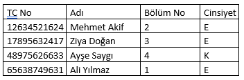

Soru 57:

Yukarıdaki SQL tablosuna göre aşağıdaki insert satırı veya satırları doğrudur?
I. INSERT INTO Calisanlar(TC_No, Adi, Bolum_No, Cinsiyet) VALUES (21365412126,'Halit Ziya',2,32);
II. INSERT INTO Calisanlar(TC_No, Adi, Bolum_No, Cinsiyet) VALUES (12634521624,'Mehmet Akif',2,'E');
III. INSERT INTO Calisanlar(TC_No, Adi, Bolum_No, Cinsiyet) VALUES (21365412126, 2,'Hakay Duyan',22);
IV. INSERT INTO Calisanlar(TC_No, Adi, Bolum_No, Cinsiyet) VALUES ('Mehmet Git', 63324521624,2,'E');
V. INSERT INTO Calisanlar(TC_No, Adi, Bolum_No, Cinsiyet) VALUES (65244152126,Ayşe Koş,5,K);
A) Yalnız I
B) II ve V
C) II ve III
D) Yalnız II
E) IV ve V
AçıklamaYok